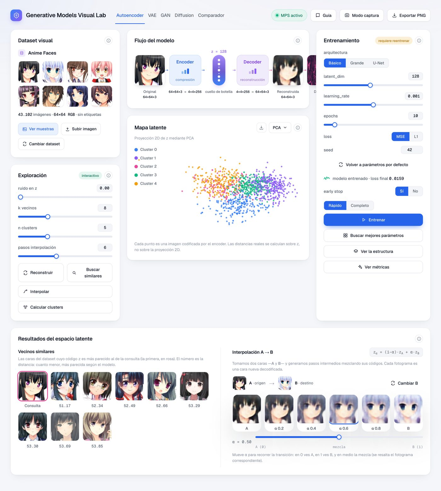
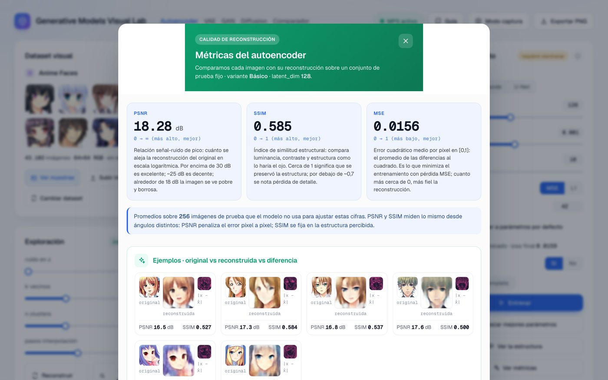
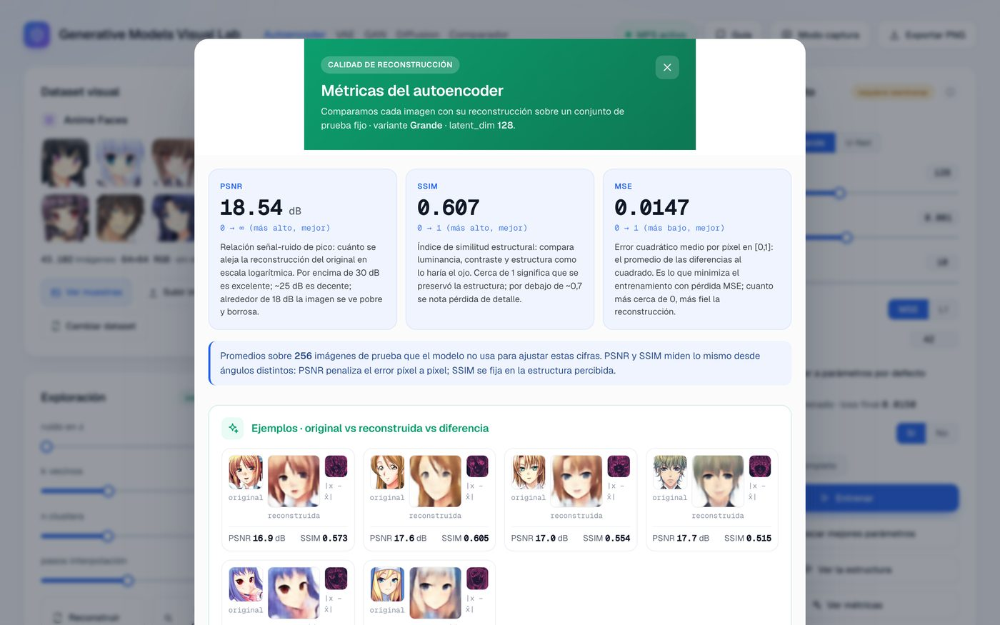
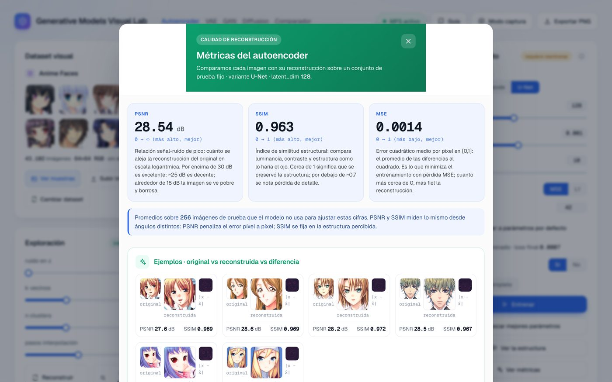
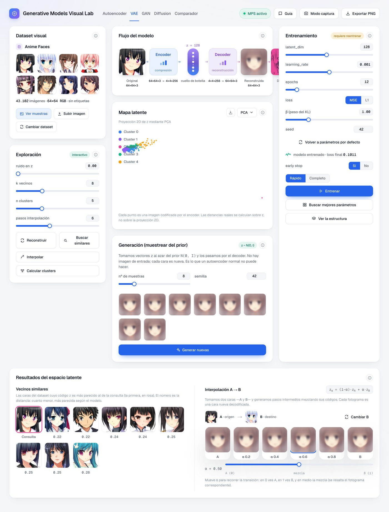
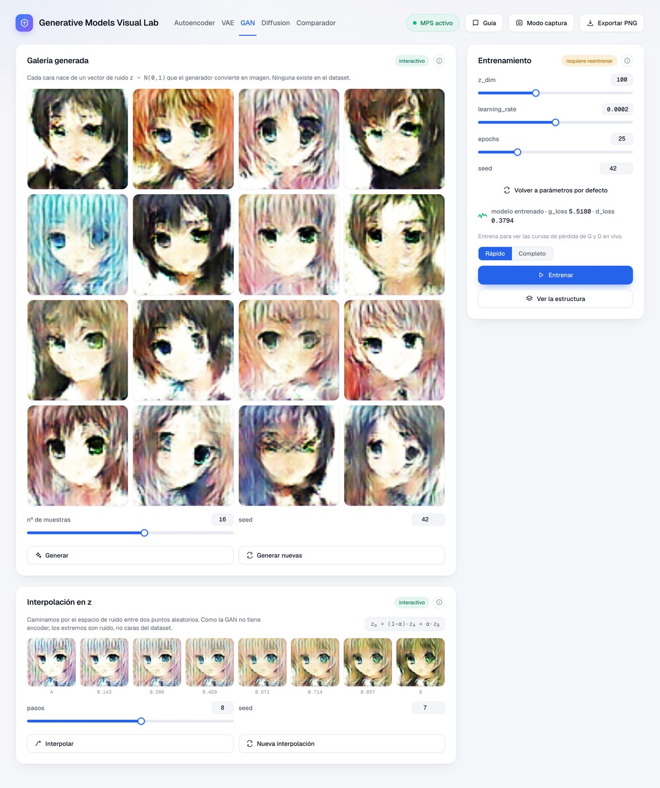
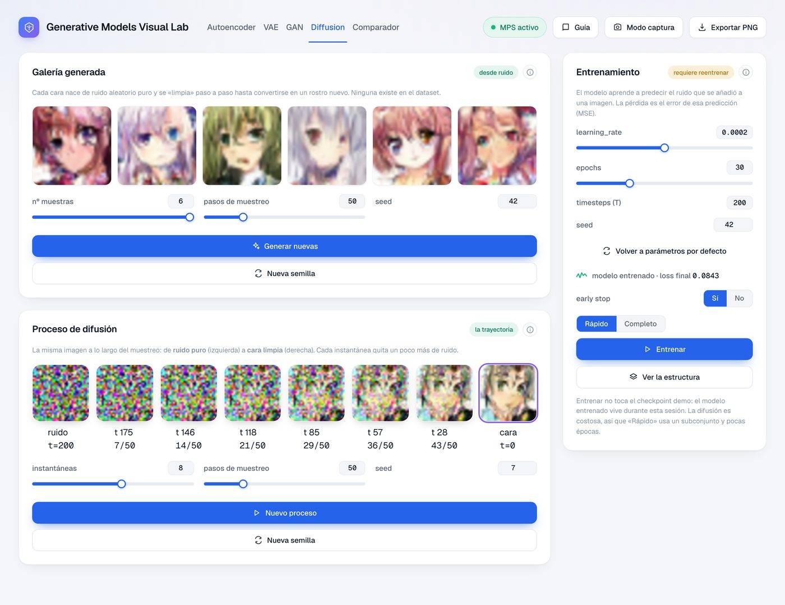
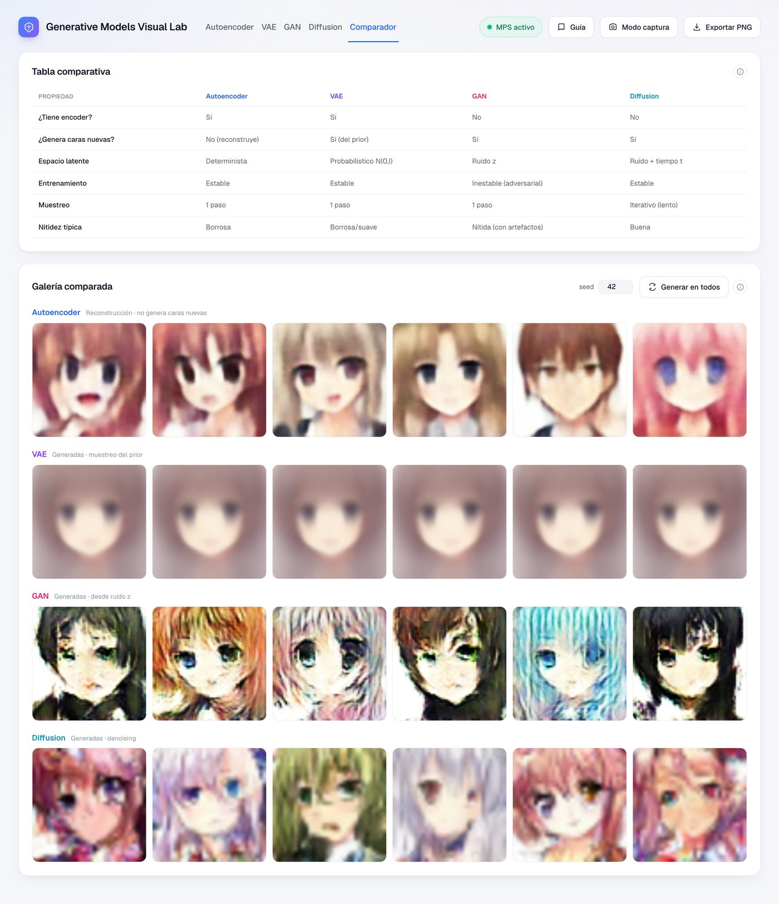

Este cuaderno acompaña a un laboratorio visual interactivo creado para entender los modelos generativos de imágenes. En lugar de leer fórmulas, se tocan los parámetros, se entrena en vivo y se ve —literalmente— qué aprende cada red. Todo corre en local sobre un conjunto de 43.102 caras de anime de 64×64, sin etiquetas.
Recorremos cuatro modelos en orden creciente de sofisticación. Cada uno resuelve una limitación del anterior:
Construir el modelo es solo la mitad. La otra mitad es mejorarlo con un bucle de realimentación: agentes auxiliares proponen variantes (arquitecturas, hiperparámetros, técnicas), las entrenan y miden con métricas objetivas (PSNR, SSIM) sobre un conjunto de prueba, y nos quedamos con lo que de verdad mejora. En cada modelo verás el "antes" (la versión básica y sus problemas) y el "después" (la mejora encontrada y verificada).
Un autoencoder tiene forma de reloj de arena. El encoder reduce la imagen (64×64×3 = 12.288 números) a un vector pequeño z (el código latente); el decoder intenta reconstruir la imagen original solo a partir de z. Como z es mucho menor que la imagen, el modelo se ve obligado a quedarse con lo esencial.
| Parámetro | Qué controla |
|---|---|
| latent_dim | Tamaño de z. Por defecto 128 (compresión ~96×). Pequeño → más abstracto y borroso; grande → más fiel, menos compresión. |
| arquitectura | Básico / Grande / U-Net. Define la capacidad y si hay skip connections (ver mejora). |
| loss | MSE (suaviza) o L1 (bordes algo más definidos). |
| learning_rate · epochs | Velocidad y duración del entrenamiento (con parada temprana). |

El autoencoder básico (2,43 M de parámetros, latent_dim=128) reconstruye caras reconocibles pero borrosas:

| Variante | Parámetros | PSNR | SSIM | Lectura |
|---|---|---|---|---|
| Básico | 2,43 M | 18.28 dB | 0.585 | Cuello puro: borroso |
| Grande | 10,72 M | 18.54 dB | 0.607 | 4× más grande… apenas mejora (sigue limitado por el cuello) |
| U-Net | 5,05 M | 28.54 dB | 0.963 | Las skips transforman la calidad con la mitad de parámetros que "Grande" |


El VAE tiene el mismo esqueleto que el autoencoder, pero el encoder no produce un punto: produce una distribución (una media μ y una varianza σ²). Se muestrea z = μ + σ·ε (reparametrización) y se añade un término KL que empuja el latente hacia una gaussiana estándar N(0, I). Al ordenar así el espacio, basta con muestrear de esa gaussiana para generar caras nuevas.
| Parámetro | Qué controla |
|---|---|
| β (peso del KL) | El compromiso clave. β=0 → un AE normal (latente desordenado); β=1 → equilibrio; β alto → latente muy ordenado pero muestras más borrosas. |
| latent_dim | Dimensión del latente probabilístico. |
| loss · lr · epochs | Como en el AE. |

| Valor de β | Efecto en la reconstrucción | Efecto en el latente / generación |
|---|---|---|
| β = 0 | Más nítida (es un AE) | Latente con huecos: muestrear da basura |
| β = 1 | Algo más borrosa | Equilibrio: se puede generar y interpolar |
| β > 1 | Más borrosa | Latente muy ordenado y suave |
La GAN tira el encoder y plantea un juego entre dos redes: el generador crea caras a partir de ruido z; el discriminador intenta distinguir las reales de las falsas. Entrenan en competición. Como el "juez" es otra red (no un error por píxel), la GAN no tiene la presión hacia el promedio y suele dar las caras más nítidas.
| Parámetro | Qué controla |
|---|---|
| z_dim | Tamaño del vector de ruido de entrada (100). |
| learning_rate | Crítico: si es muy alto, el juego se desequilibra y colapsa. |
| epochs | Iteraciones del juego adversarial. |

Un modelo de difusión aprende el proceso inverso de "ensuciar" una imagen. En el proceso forward se añade ruido gaussiano poco a poco hasta dejar ruido puro. En el reverse, una red (una UNet condicionada en el paso t) aprende a predecir y quitar ese ruido. Para generar, se parte de ruido puro y se limpia paso a paso hasta una cara.
| Parámetro | Qué controla |
|---|---|
| timesteps (T) | Longitud del proceso de ruido (200). Es del modelo. |
| pasos de muestreo | Cuántos pasos se usan al generar. Más pasos = mejor, pero más lento. |
| schedule | Cómo se reparte el ruido (cosine por defecto, mejor que lineal a baja resolución). |
| learning_rate · epochs | Entrenamiento del denoising (pérdida MSE sobre el ruido predicho). |
La primera versión generaba manchas de color, no caras — incluso al final del proceso. Lo desconcertante: la pérdida bajaba bien (de 0,50 a 0,084), señal de que la red sí estaba aprendiendo a quitar ruido.

| Aspecto | Antes | Después |
|---|---|---|
| Muestreo | DDPM de un paso, submuestreado | DDIM (salta timesteps correctamente) |
| Pesos para muestrear | Crudos (oscilan con el minibatch) | EMA (media móvil, estables) |
| Resultado visual | Ruido de colores | Caras reconocibles |
| ¿Reentrenar? | — | No: era solo el sampler |

| Propiedad | Autoencoder | VAE | GAN | Diffusion |
|---|---|---|---|---|
| ¿Tiene encoder? | Sí | Sí | No | No |
| ¿Genera caras nuevas? | No | Sí | Sí | Sí |
| Entrenamiento | Estable | Estable | Inestable | Estable |
| Muestreo | 1 paso | 1 paso | 1 paso | Iterativo (lento) |
| Nitidez típica | Borrosa | Borrosa | Nítida | Buena |
Cada modelo cambia un compromiso por otro: el VAE cede algo de nitidez por un latente ordenado; la GAN cambia estabilidad por nitidez; la difusión cambia velocidad por calidad. Y, en todos, el bucle de realimentación agéntica —proponer, entrenar, medir y quedarnos con lo que mejora— fue lo que convirtió un primer intento mediocre en algo que funciona: las variantes del autoencoder y, sobre todo, el arreglo del muestreo en difusión.